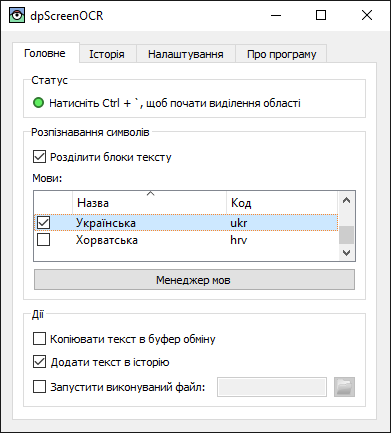

dpScreenOCR
dpScreenOCR — це програма, яка дозволяє витягувати текст з будь-якої частини екрана. Вона позбавляє від передруковування під час роботи зі сканованими документами, скриншотами, відео, елементами інтерфейсу та в інших ситуаціях, коли звичайне копіювання тексту неможливе.

Особливості:
-
Підтримка 100+ мов. Англійська включена за замовчуванням; інші можна встановити через вбудований менеджер.
-
Простота використання. Натисніть глобальну гарячу клавішу, щоб вибрати область на екрані та надіслати розпізнаний текст у буфер обміну.
-
Робота офлайн. Розпізнавання відбувається локально на вашому пристрої. Інтернет потрібен лише для завантаження додаткових мов.
-
Вільне та відкрите програмне забезпечення. Працює на базі Tesseract.
Прочитайте посібник користувача для отримання інструкцій зі встановлення, налаштування та використання.
Завантажте версію 1.5.1 (зміни, ліцензія):
Зробіть внесок, взявши участь у перекладі або розробці.